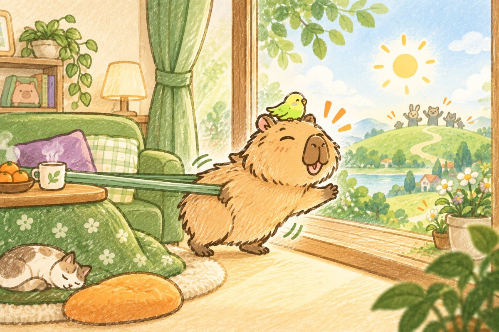
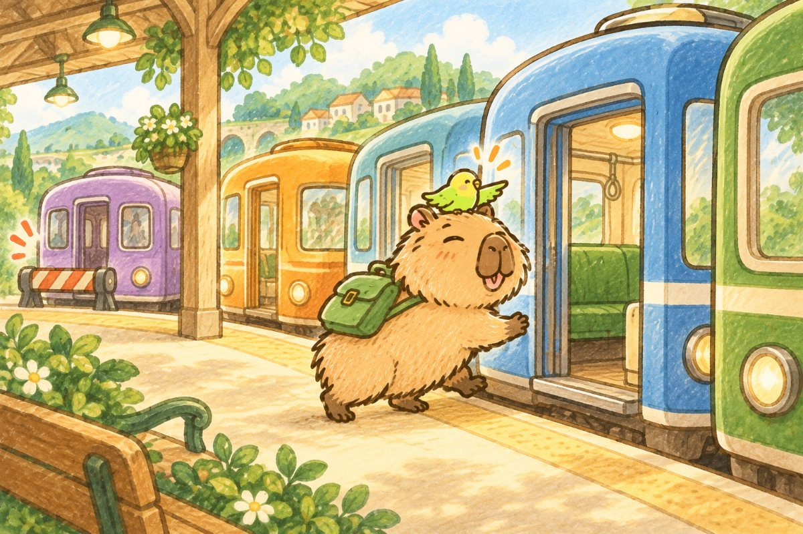
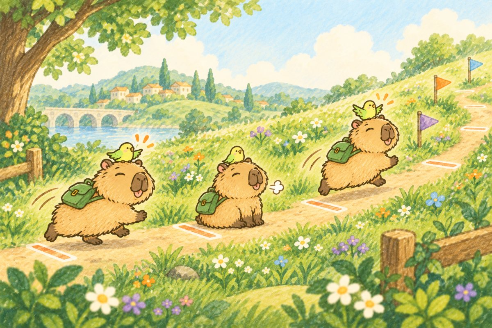

まず前提
変われないのは、意志が弱いからじゃない

目標を立てたのに続かない。いつもの自分に戻ってしまう。2冊の本は、それぞれ別の角度から同じことを言っていました。
『自分の変え方』
人は「今の場所」に戻るようにできている
- 変わらずに快適な状態にとどまろうとするのは、人間に備わった自然な習性（ホメオスタシス）。
- モチベーションの正体は、コンフォートゾーンに戻ろうとする力。
『ザ・コーチ』
目標を止めるブレーキは3つ
- 無知／変化への恐れ／選ぶこと・決めることへの恐れ。
- ブレーキの強さは、ゴールの大きさに比例する。
だから、おけもん式では「変われない理由」を消そうとしません。最初から設計図に書き込んで、止まった時の乗り換え先まで決めておきます。
言葉をそろえる
5つの言葉を分けておく
『ザ・コーチ』の看板です。ここが混ざったままだと、力が分散します。
夢
叶ったらラッキーな願い。人と比べない。
目的
何のために。いちばん上にあって、揺らがない。
ゴール
期日つきの到達点。道はいくらでもある。
目標
途中の目印。いつ立て直してもいい。
ビジョン
ゴールに着いた瞬間の気持ちを、今のうちに味わう。
目的（ゆるがない） → ゴール（道は無限） → 目標（柔軟に）
6つのステップ
おけもん式の立て方
目的は「誰と・誰のために」から
ザ・コーチストファイ 視点1目的が抜けると、目標は一人歩きしてノルマになります。「何をやるか」より先に、「誰のためか」を置きます。
- これがうまくいったら、誰をいちばん喜ばせたい？
- ほかに理由はある？（もう1回聞くと本音が出る）
資質が満たされていた時に、目的のヒントがあります。自然と動けていた時、誰と何をしていましたか？
ゴールは「今の延長」の少し外へ。でも別人にはならない
自分の変え方ザ・コーチ今のやり方の延長で届くゴールだと、いつもの自分のままで終わります。ゴールは今の生き方の外側に置きます。ただし目指すのは別人ではなく、自分の進化形です。そして期日を入れます。
- 「よし、自分の進化形はこれだ」と思える？
- 「なんだか他人のゴールみたい」と感じない？（感じたら立て直す合図）
- 仕事以外の、家族・健康・趣味などとぶつかっていない？
ビジョンで、未来のほうを「いつもの場所」にする
自分の変え方ザ・コーチ脳は、今か未来かに関係なく、より臨場感が強いほうを自分の居場所だと思います。ゴールに着いた瞬間の景色がありありと浮かぶと、戻ろうとする力が未来のほうへ働きます。本では「コンフォートゾーンが未来にズレる」と呼んでいます。
- その日、誰と、どこで、どんな顔をしている？
- そのとき、最初に誰に報告する？
ビジョンは一度描いたら終わりではありません。毎週、描き直します。
目標は「やること」ではなく「状態」で書く
ザ・コーチ「〜をやる」を目標にすると、作業の消化になって気持ちがしぼみます。主語は「私」。いつ・何が・どうなっているかを書きます。大きいゴールでブレーキを感じたら、小さい目標をたくさん置くとブレーキが軽くなります。
「いつもの自分の止め方」を、先に書いておく
自分の変え方ザ・コーチストファイ 視点2
おけもん式でいちばん大事なところです。止まるのは想定内。どこで止まりそうかを先に書いて、止まった時に乗り換える資質を決めておきます。
- この理想に向かう途中で、いつもの自分が止めるとしたら、どんな止め方をしそう？
- 3つのブレーキのうち、どれがいちばん効いてきそう？
- その時、TOP5のどの資質に乗り換える？
資質が渇いていた時が、止まりやすい場所のヒントです。「この資質だからできない」ではなく、「ここで止まりそうだから、この資質で進む」と考えます。
自分の走り方で進む。道の途中で変えていい
ザ・コーチ自分の変え方
短いサイクルで始めて、すぐ終える。本の言葉でいうと「三日坊主百連発」。3日でやめて、また始めればいい。
最初は物足りないくらい少ない量から。エネルギーをためてから加速する。
進み具合は、人と比べるためではなく自分の現在地を知るためだけに見ます。始めたばかりの頃は1週間ごと、慣れたら間隔をあけて。
進むうちに、目に入るもの・耳に入るものが変わってきます。途中で新しい道が見つかったら、目標を変えていい。目的さえ揺らがなければ大丈夫です。
書いてみる
おけもん式・目標の1枚
全部うまらなくて大丈夫です。単語だけでもOK。書いたものは、このスマホ（PC）のブラウザの中だけに残ります。
AIに渡す文
当日の工程2・工程3で、イヒローさんのプロンプトと一緒に貼ってもOKです。
出典：谷口貴彦『ザ・コーチ 最高の自分に出会える「目標の達人ノート」』（プレジデント社）／村岡大樹『自分の変え方 認知科学コーチングで新しい自分に会いに行く』（幻冬舎）。本文は2冊の考え方をもとに、おけもんがストレングスファインダーと組み合わせてまとめ直したものです。資質の記述は CliftonStrengths®（Gallup, Inc.）にもとづく解釈です。